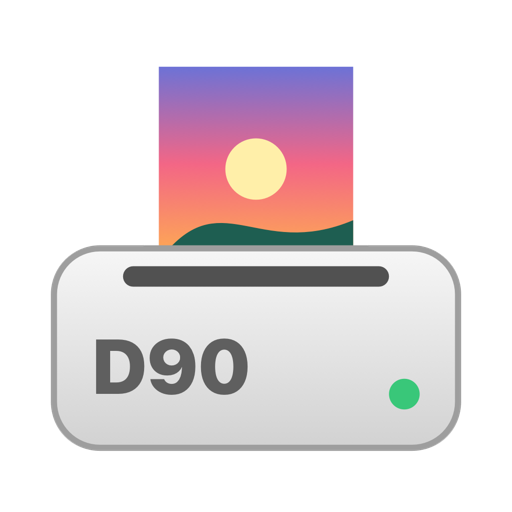

Mitsubishi CP-D90DW driver for Mac, native on Apple Silicon
A free, open-source macOS driver for the Mitsubishi CP-D90DW dye-sublimation photo printer. It runs natively on Apple Silicon and Intel Macs and does not need Rosetta 2.
Download the installer (.pkg) Source on GitHubVersion 1.4.1 · macOS 11 or later · GPL-3.0
“The printer software is not compatible with this device”?
Mitsubishi's own Mac driver for the CP-D90DW (v3.00, 2019) is Intel-only and runs through Rosetta 2. Apple has announced that macOS 27 is the last release with full Rosetta 2 support, so that driver stops working. This driver replaces it.
What it does
- All 17 print sizes of the CP-D90DW: 9×13, 10×15 (4×6"), 13×18 (5×7"), 15×20 (6×8"), 15×21, 15×23 (6×9"), 10×15 ×2, 2×6" strips, 5×15, 15×15, 13×13 and the white-border variants.
- Glossy and matte, Auto, Fine and Ultra Fine modes, with the same options and paper-size names as the official driver, so existing presets keep working.
- Ribbon levels in System Settings: ribbon name and remaining prints, with warnings when it is almost empty.
- Printer errors (ribbon end, ribbon and paper mismatch, paper jam, printing unit open) shown in the macOS print queue.
- Sizes that do not fit the loaded ribbon are rejected before anything is printed.
- Lightroom Classic and Photoshop with colour management by the application.
- Finder Quick Actions: right-click photos and print at 15×20 or 10×15, glossy or matte.
- iPhone and iPad printing: the Mac publishes an AirPrint printer for the CP-D90DW.
cpd90-print, a command-line tool that prints at the exact pixel size of each format with ICC colour conversion and output sharpening.
Install
- Connect the CP-D90DW by USB and switch it on.
- Download the installer and open it.
- The package is not signed with an Apple Developer ID, so macOS warns first. Click Done, open System Settings › Privacy & Security, scroll to Security and click Open Anyway.
- The installer creates the print queue CP-D90. Existing queues are never changed.
Prefer Terminal? This installs with no warning:
sudo installer -pkg CPD90Universal-1.4.1-public.pkg -target /ICC profiles
Mitsubishi's ICC profiles are not included. Search for “Mitsubishi Electric CP-D90DW ICC profile” on Mitsubishi Electric's official website; the files you need are CPD90_UF.icc and CPD90_ST.icc. The README explains how to install them.
Recommended colour workflow, validated on real prints: let the application manage colours with the CPD90_UF profile, print in Ultra Fine mode, and turn the printer's colour conversion off.
Tested
Tested on a real CP-D90DW with the CK-D868 (6×8") media kit on macOS 26, Apple Silicon: 15×20, 10×15, 10×15 ×2, 2×6" strips, multi-photo jobs, glossy and matte, ribbon levels and iPhone printing. Not yet tested on paper: 5" media, 6×9" media and other printer variants such as the CP-D90DW-P.
Questions
Does it work on Intel Macs? Yes. The binaries are Universal (arm64 and x86_64).
Does it remove the Mitsubishi driver? No. Both can be installed at the same time, and your existing queues are left alone.
How do I uninstall it? sudo /Library/Printers/CPD90Universal/desinstalar.sh
Something does not work. Open an issue with your macOS version and media kit.
Driver da Mitsubishi CP-D90DW para Mac, nativo em Apple Silicon
Um driver gratuito e open source para macOS para a impressora fotográfica de sublimação Mitsubishi CP-D90DW. Corre nativamente em Macs Apple Silicon e Intel e não precisa do Rosetta 2.
Descarregar o instalador (.pkg) Código no GitHubVersão 1.4.1 · macOS 11 ou superior · GPL-3.0
“O software da impressora não é compatível com este dispositivo”?
O driver da Mitsubishi para Mac da CP-D90DW (v3.00, 2019) é só para Intel e corre através do Rosetta 2. A Apple anunciou que o macOS 27 é a última versão com suporte completo ao Rosetta 2, por isso esse driver deixa de funcionar. Este driver substitui-o.
O que faz
- Os 17 formatos da CP-D90DW: 9×13, 10×15, 13×18, 15×20, 15×21, 15×23, 10×15 ×2, tiras 2×6", 5×15, 15×15, 13×13 e as versões com margem branca.
- Brilhante e mate, modos Auto, Fine e Ultra Fine, com as mesmas opções e nomes de tamanhos do driver oficial, para os presets existentes continuarem a funcionar.
- Níveis da fita nas Definições do Sistema: nome da fita e impressões restantes, com aviso quando está a acabar.
- Erros da impressora (fim da fita, fita e papel que não correspondem, papel encravado, unidade de impressão aberta) na fila de impressão do macOS.
- Os formatos que não cabem na fita instalada são recusados antes de imprimir.
- Lightroom Classic e Photoshop com gestão de cor pela aplicação.
- Ações Rápidas do Finder: botão direito nas fotos para imprimir em 15×20 ou 10×15, brilhante ou mate.
- Impressão do iPhone e do iPad: o Mac publica uma impressora AirPrint para a CP-D90DW.
cpd90-print, uma ferramenta de linha de comandos que imprime com o tamanho exato de cada formato, com conversão ICC e nitidez de saída.
Instalar
- Ligue a CP-D90DW por USB e acenda-a.
- Descarregue o instalador e abra-o.
- O pacote não tem assinatura de programador da Apple, por isso o macOS avisa primeiro. Clique em OK, abra Definições do Sistema › Privacidade e segurança, desça até Segurança e clique em Abrir mesmo assim.
- O instalador cria a fila de impressão CP-D90. As filas existentes nunca são alteradas.
Prefere o Terminal? Assim instala sem aviso:
sudo installer -pkg CPD90Universal-1.4.1-public.pkg -target /Perfis ICC
Os perfis ICC da Mitsubishi não estão incluídos. Pesquise por “Mitsubishi Electric CP-D90DW ICC profile” no site oficial da Mitsubishi Electric; os ficheiros necessários são o CPD90_UF.icc e o CPD90_ST.icc. O README explica como os instalar.
Fluxo de cor recomendado, validado em impressões reais: a aplicação gere as cores com o perfil CPD90_UF, modo Ultra Fine, e a conversão de cor da impressora desligada.
Testado
Testado numa CP-D90DW real com o kit CK-D868 (15×20) em macOS 26, Apple Silicon: 15×20, 10×15, 10×15 ×2, tiras 2×6", tarefas com várias fotos, brilhante e mate, níveis da fita e impressão do iPhone. Ainda não testado em papel: papel de 5", papel de 6×9" e outras variantes da impressora, como a CP-D90DW-P.
Perguntas
Funciona em Macs Intel? Sim. Os binários são Universal (arm64 e x86_64).
Remove o driver da Mitsubishi? Não. Os dois podem estar instalados ao mesmo tempo, e as filas existentes ficam como estão.
Como desinstalo? sudo /Library/Printers/CPD90Universal/desinstalar.sh
Algo não funciona. Abra um issue com a versão do macOS e o kit de papel.